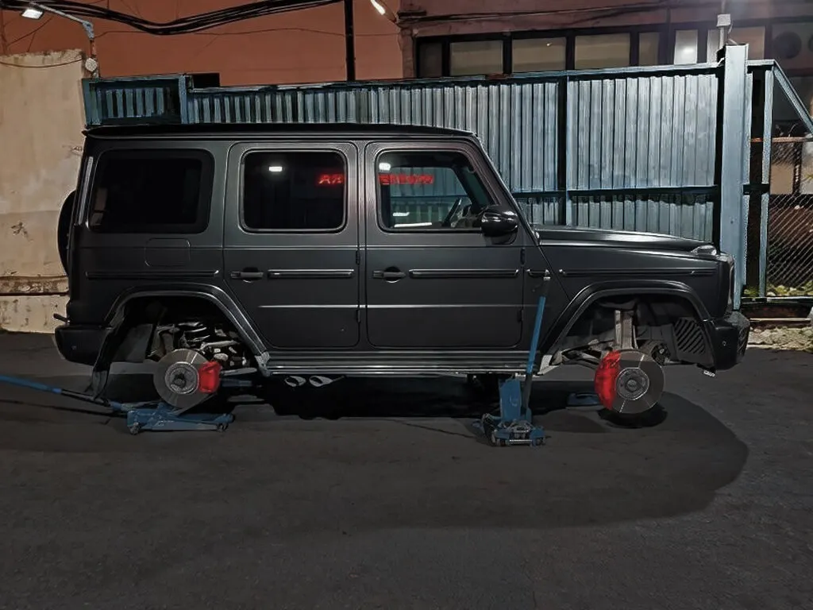
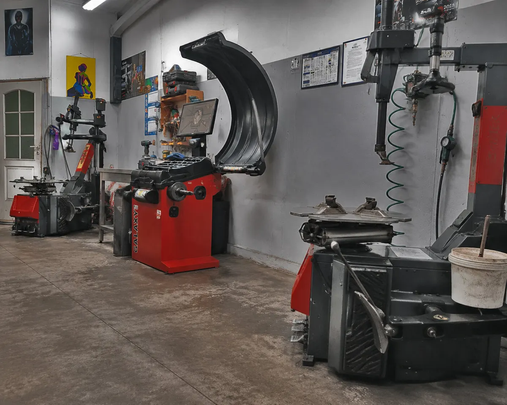
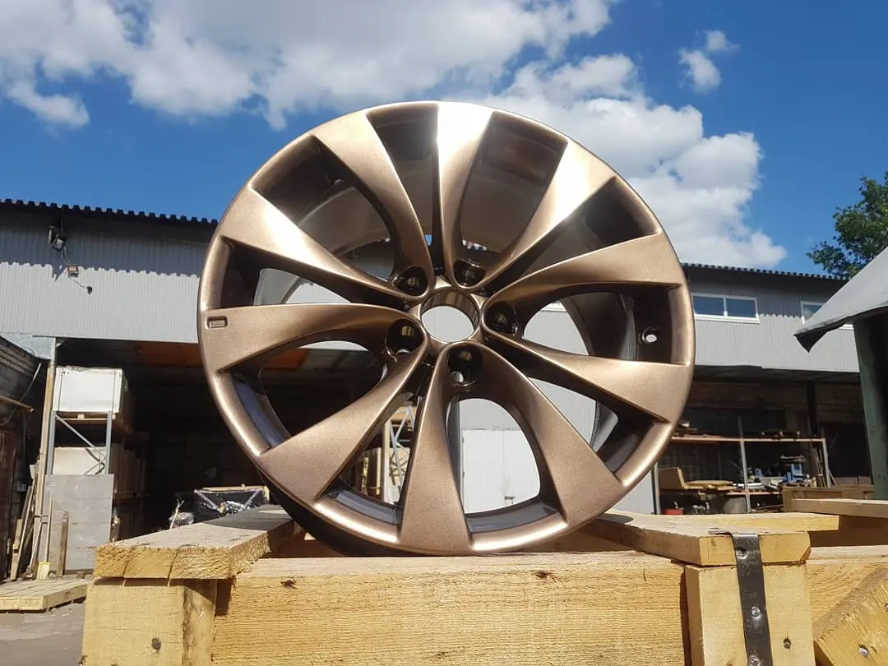
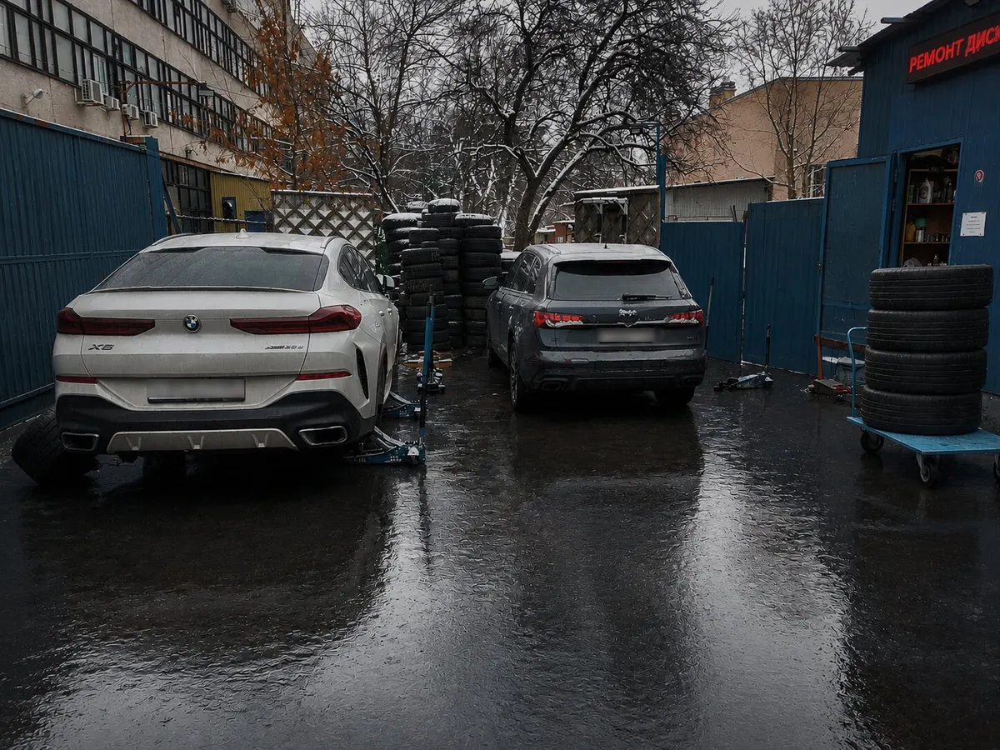

Шиномонтаж · ремонт дисков · Санкт-Петербург
Шиномонтаж и ремонт дисков у Обводного канала
Запишитесь онлайн – переобуем, отбалансируем, покрасим или выправим диски. Цену называем заранее, а если колесо спустило – приедем сами.
- Порошковая покраска дисков с гарантией 1 год
- Выездной шиномонтаж
- Хранение шин – 7 месяцев за 4000 ₽

Что входит в шиномонтаж «под ключ»
Входит
- Снятие и установка колёс
- Перемонтаж шин на диски
- Балансировка
Отдельно, если нужно
- Ремонт проколов и порезов – если нашли, скажем до работы
- Хранение – 4000 ₽ за 7 месяцев, выдача в день обращения
Цены
Цены с нашей карточки на Яндекс Картах. Точную сумму под ваши колёса назовём при записи – и она не вырастет по ходу работы.
Шиномонтаж
- Комплект 4 колеса, R16 – под ключ3 600 ₽
- Комплект 4 колеса, R20 – под ключ5 600 ₽
- Комплект 4 колеса, R21 – под ключ6 000 ₽
- Балансировкауточнить
- Ремонт проколауточнить
- Ремонт бокового порезауточнить
- Выездной шиномонтажуточнить
Диски и хранение
- Порошковая покраска дисков R18, 4 шт. – шлифовка, «бордюрка», гарантия 1 год14 000 ₽
- Сварка литого диска аргоном, 1 шт.от 1 500 ₽
- Правка дисковуточнить
- Хранение шин или колёс, 7 месяцев, любой размер4 000 ₽
Как проходит
- 01
Записались на своё время
Через сайт, WhatsApp или по телефону.
- 02
Приехали на Прилукскую, 20Б
580 м от метро «Обводный канал», рядом парковка.
- 03
Ждёте недолго
Клиенты пишут: подождал 15–20 минут. Рядом кофейня и рестораны.
- 04
Уезжаете
Колёса переобуты и отбалансированы, цена та, что назвали сразу.



Почему к нам возвращаются
Цена заранее
Клиенты пишут: «Все быстро, прозрачно, честно и обсуждается на берегу».
Большие и низкие колёса
Аккуратно меняем шины на низком профиле, вплоть до R22.
Диски – тоже к нам
Порошковая покраска с гарантией год, сварка аргоном, правка.
Приедем, если колесо встало
Выездной шиномонтаж: снимем колесо, поставим запаску, починим.
Отзывы с Яндекс.Карт
«Много лет переобуваю и храню у ребят шины от 2х машин. Всегда проверяют все ли с ними в порядке, и если что сразу ремонтят или посоветуют на что заменить. Вообще очень приятные ребята и делают быстро. Рядом есть китайский, турецкий ресторан и кофейня где можно подождать. Обычно за 40 минут все готово. Записывайтесь заранее, рекомендую ☝️»
Марина Севелева · 15 ноября 2026
«Большое спасибо за оперативное спасение! Порезала колесо, спустило в ноль. Мастер приехал буквально за 10 минут, снял колесо, поставил мою запаску, и мы поехали чиниться. После обратной замены дополнительно отбалансировал запаску и подкачал ее. Цена тоже порадовала. Отличный сервис, всем рекомендую!»
Ольга · 26 февраля 2026
«Самый крутой сервис по шиномонтажу! Да, стоимость не дешёвая, но подход Ростислава к работе вызывает уважение! После сезонного переобувания в сетевом шиномонтаже было биение колес. Ездил в двух разных шиномонтажах балансировал колеса, никто не увидел что шины не до конца сели на диск, соответственно , было биение. Тут сразу все увидели и исправили! Очень качественный и ответственный подход!!! Теперь только сюда, хоть и живу загородом, но однозначно теперь только сюда! Рекомендую всем!!!»
Павел Воробьев · 19 апреля 2026
Отзывы с карточки на Яндекс.Картах, без правок.
Частые вопросы
Сколько стоит переобувка?
Комплект R16 под ключ – 3600 ₽, R20 – 5600 ₽, R21 – 6000 ₽. Точную сумму назовём при записи.
Можно оставить шины на хранение?
Да: 4000 ₽ за 7 месяцев, любой размер. Шины или колёса выдаём в день обращения.
Красите диски?
Да, порошковой краской: шлифуем вручную, убираем «бордюрку», даём гарантию 1 год. Комплект R18 – 14 000 ₽.
Колесо спустило, ехать не могу – что делать?
Позвоните или напишите в WhatsApp: у нас есть выездной шиномонтаж.
Запишитесь к своему времени
- Адрес
- Прилукская улица, 20Б, Санкт-Петербург
- Часы
- Ежедневно 10:00–22:00
- Телефон
- +7 (952) 222-14-14